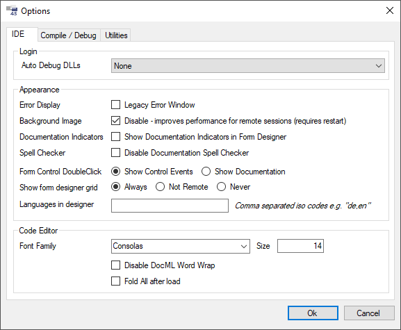
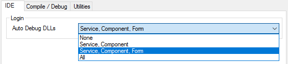

Options
Die Options können in der IDE über den Menüeintrag Tools / Options geöffnet werden.
IDE (Registerkarte)

Login
Auto Debug DLLs
Diese Option kann hinterlegt werden und wird im Login-Dialog und im GetDLLs-Dialog verwendet. Auf den "normalen" Compile hat diese Option keine Auswirkung.
Im Login- und GetDLL-Dialog wird die Einstellung aus den Options übernommen. Die Einstellung kann jedoch in beiden Dialogen temporär geändert werden. Bedeutet, dass Änderungen am Auto Debug im Login- oder GetDLL-Dialog keine Auswirkungen auf die Option im Options-Dialog haben.
Es stehen folgende drei Optionen zur Verfügung:

- Service, Component: Alle Namespaces der Services und Components werden debuggable kompiliert.
- All: Hier werden alle Namespaces jeden Types debuggable kompiliert.
- None: Bei dieser Einstellungen wird nichts debuggable kompiliert.
Appearance
Error Display
Wird die Checkbox Legacy Error Window gesetzt, kann erzwungen werden, dass die Errors in derselben Art und Weise ausgegeben werden, wie es bis Framework Studio 2.6 der Fall war.
Background Image
Wird die Checkbox Disable gesetzt, wird in der Framework Studio Umgebung kein Hintergrundbild mehr angezeigt. Dies kann zu einer Performancesteigerung bei Remote Sessions beitragen (z.B. VNC).
Documentation Indicators
Zeigt an den Controls im Form-Designer an, ob eine Dokumentation gepflegt ist, bzw vererbt wurde.
Siehe Dokumentationsstatus von Steuerelementen
Spell Checker
Deaktiviert die automatische Rechtschreibprüfung im Dokumentationseditor.
Form Control DoubleClick
Gibt an, was im Form-Designer passieren soll, wenn auf ein Control Strg + Doppelklick ausgeführt wird.
RadioButton Show Control Events: Zeigt den Events-Dialog für das Control an. Diese Option ist sinnvoll für normale Entwickler. Der Documentation-Editor kann über das Context-Menü des Controls geöffnet werden.
RadionButton Show Documentation: Zeigt den Documentation-Editor für das Control an. Diese Option ist sinnvoll für Benutzer, die viel an Dokumentationen arbeiten. Die Control-Events können über das Context-Menü des Controls geöffnet werden.
Show form designer grid
Gibt an, ob im Form-Designer das Raster-Grid angezeigt werden soll. Bei der Arbeit über Remote Desktop kann dieses Grid die Performance sehr stark verschlechtern.
Languages in designer
Hier können die Sprachen eingestellt werden, die in den MLStrings und im Wörterbuch angeboten werden sollen. Die Reihenfolge wird - sofern dies möglich ist - von den Designer-Fenstern berücksichtigt.
Es werden kommasepariert die Iso-Codes der Sprachen angegeben - z.B. de,en,fr.
Wird keine Angabe gemacht, werden in allen Designer-Fenstern immer alle verfügbaren Sprachen angeboten.
Code Editor
Font Family und Size
Hier können Schriftart und -größe für den Code Editor angepasst werden.
Disable DocML Word Wrap
DocML-Editoren brechen standardmäßig am Ende einer Zeile um. Dies geschieht abhängig von der Breite des Editors. Ist dieses Verhalten nicht gewünscht, so kann über die Option Disable DocML Word Wrap das Umbrechen deaktiviert werden. Der Editor zeigt dann bei Bedarf eine horizontale Scrollbar an.
Fold all after load
Wenn aktiviert, dann werden nach dem Laden des Codes im Editor alle möglichen Codeblöcke zusammengeklappt dargestellt. In einem C# Editor z.B. #region und #endregion.
Compile / Debug (Registerkarte)

Broker Port
Standard Broker Port. Wird 0 eingetragen, wird automatisch ein freier Port genutzt.
Host Port
Standard Broker Port. Wird 0 eingetragen, wird automatisch ein freier Port genutzt.
Compile Rootdirectory
Gibt an, unter welchem Ordner Framework Studio die Compile-Verzeichnisse erzeugen soll. Diese Einstellung muss manuell in der Datei FrameworkStudio.exe.config angepasst werden.
Beispiel:
<configuration>
<appSettings>
<add key="CompileBaseDirectory" value="C:\FS\Compile42" />
[...]
Open compiled code in
Hier können Sie externe Programme (Visual Studio, VS Code, etc.) konfigurieren, in welchen der kompilierte Code eines Elements angezeigt werden soll. Der Aufruf erfolgt über das Menü View / Compiled code in {Caption} in den Designer-Fenstern oder über die entsprechenden Shortcuts.
Standardmäßig versucht Framework Studio die derzeit unterstützten Versionen von Visual Studio zu erkennen und diese beim Path der beiden Konfigurationen zu hinterlegen.
Caption
Die Captions sind standardmäßig "Visual Studio" und "Visual Studio (new instance)". Die erste Konfiguration öffnet den Code standardmäßig in einer bestehenden Visual Studio Instanz. Bei der zweiten Konfiguration wird eine neue Instanz von Visual Studio gestartet.
Die Captions können bearbeitet werden und dienen als ergänzende Beschreibung für die Menü-Einträge im Designer-Fenster.
Path
Wie in der Einleitung beschrieben, versucht Framework Studio eine Visual Studio Instanz zu finden und diese als Pfad zu hinterlegen. Wenn eine andere Version oder Edition (z.B. Visual Studio Express) verwendet werden soll, kann das entsprechende Programm angegeben werden.
Der Ordner aus der ersten "Open compiled code"-Konfiguration wird außerdem dafür verwendet, um für die Arbeit mit Services das Programm WcfTestClient.exe zu finden.
Wird bei der zweiten Konfiguration kein Path angegeben, wird auf die erste Konfiguration zurückgegriffen, also dem Visual Studio Path oder auf ein von Ihnen bereits hinterlegtes Programm.
Arguments
Hier können die Kommandozeilen-Argumente für das Öffnen der Quellcode-Dateien angegeben werden. Beim Einsatz von Visual Studio können die Standard-Einstellungen %file% /Edit beibehalten werden.
Der Platzhalter %file% steht für die zu öffnenden Dateien. Dieser werden in dem Format "Datei1.cs" "Datei2.cs"… übergeben. Wenn dieser Platzhalter nicht angegeben ist, dann werden die Dateien an der Parameter gestellt.
Reset Buttons
Die Reset Buttons setzen die Felder auf die Default Werte zurück.
Utilities (Registerkarte)

Mit dem Button [...] kann jeweils ein Dateiauswahldialog geöffnet werden.
SvcUtil
Gibt den Pfad zur SvcUtil.exe des Windows SDK an. Diese wird für die Generierung des Services verwendet.
InstallUtil
Gibt den Pfad zur InstallUtil.exe des .NET-Frameworks an.
Crystal Report Designer
Gibt den Pfad zum Crystal Report Designer an.
Diff Tool
Hier kann die ausführbare Datei für das Diff Tool angegeben werden.
Diff Tool Data Dir
Hier kann das Datenverzeichnis für das Diff Tool angegeben werden.